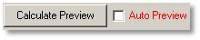

所有数据分析对话框（拖放操作对话框）都有显示结果预览的预览窗口。
如果使用非常大的数据对象，一些对话框需要一些计算时间。
它们显示以下选项：

自动预览（复选框）：
使用此复选框，您可以关闭自动预览，以便在更改设置或掩模时不受耗时较长的自动计算干扰。
如果对话框以非常大的对象打开（例如图像 > 700 x 700 像素），此选项会自动关闭。
计算预览（按钮）：
如果自动预览模式已关闭，您可以通过按下该按钮手动执行一次预览计算。